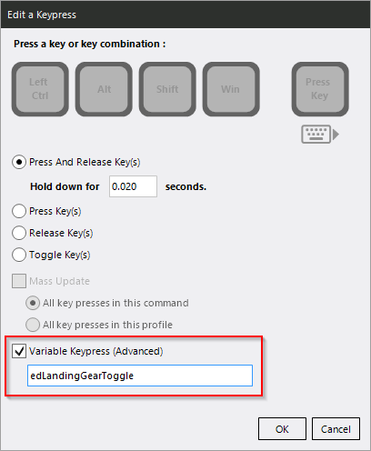

bindED¶
This VoiceAttack plugin reads keybindings in Elite:Dangerous and stores them as VoiceAttack variables. It was originally written by Gary (the developer of VoiceAttack) and published on the VoiceAttack forums. You can find the original README here for reference.
I have basically done a complete rewrite the original source code at this point and added a lot of features including automatic detection of the correct bindings file and support for non-US keyboard layouts (see below for details).
Installing¶
Grab bindEDplugin.zip from the release
page and extract it
into your VoiceAttack’s Apps directory. If you have an older version already
installed, please delete the bindED subfolder first.
For Horizons players, that’s it! When VoiceAttack loads, bindED will automatically detect your bindings. It will also keep a watchful eye on Elite’s bindings folder and reload them when there is a change!
For Odyssey players, there is an additional caveat: you have to use the same preset for all 4 sections (general, ship, SRV, foot). Sadly it’s not apparent from the files which of these sections a bind belongs to, so there is no simple way to read multiple files properly.
Using Binds In Commands¶
Each bind in Elite Dangerous has a name assigned in the binds file. The plugin
takes this name, prepends ed and turns it into a VoiceAttack variable.
To press the corresponding key in the game, you will have to create a new
Key Press action in a VoiceAttack command and use the desired variable named
after the ingame bind. In order to toggle your landing gear for example you will
have to create a Key Press action and use the edLandingGearToggle variable.

Supported Keyboard Layouts¶
If you are using any non-US layout you might have noticed that some binds don’t
work. You can set a text variable in VoiceAttack called bindED.layout# to the
layout you want to use. If the variable is not set it will defaut to en-us.
The following layouts are supported out of the box:
- en-US
- en-GB
- de-neo2
If you are on a different layout, you can either use only the keys that work with the default layout or add support for your preferred layout yourself. See Troubleshooting#Adding a Keyboard Layout.
Need Help / Want to Contribute?¶
If you run into any errors have a look at Troubleshooting. If your problem persists, please file an issue. Thanks! :)
You can also say “Hi” on Discord if that is your thing.